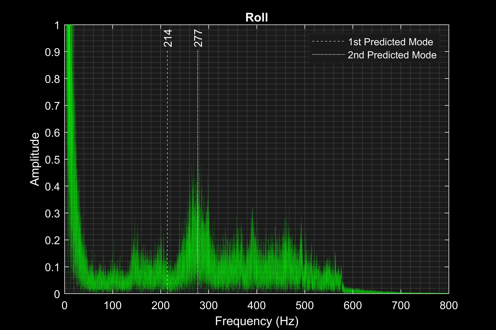
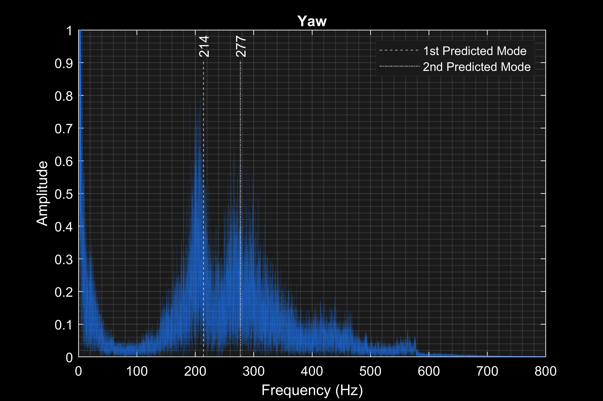
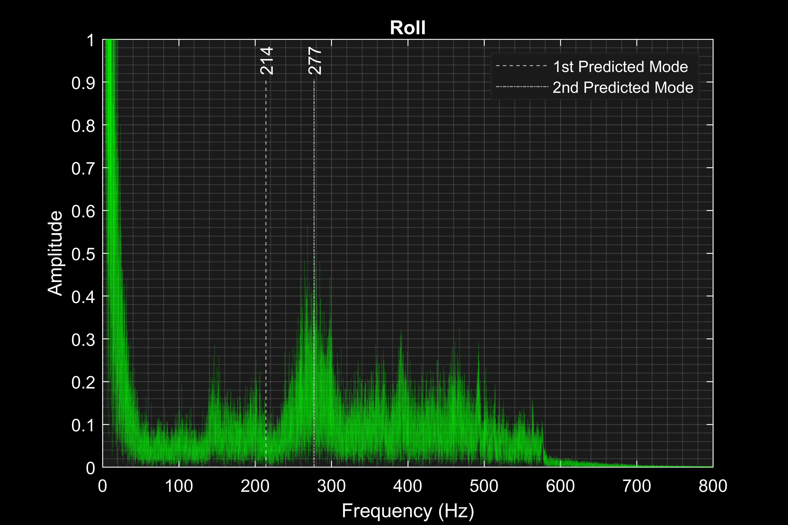
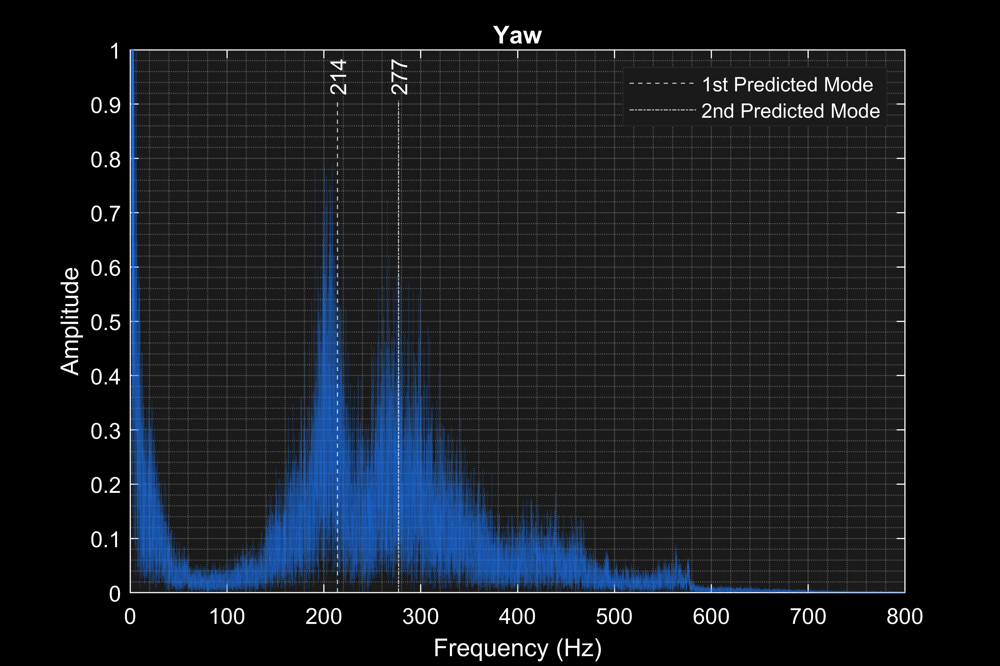

Un-tiled
A novelty CNC pick & place machine
Over the years, I have built 4 custom FPV racing drone from off-the-shelf components and modifed/upgraded several additiona drones. This hopbby has taught me many skills including PID contoll theory and tuning, battery and electrical engineering, Radio-Frrequency science, and flight theory.

While some drones seek to optemize one or two specific design paramters, this craft was meant to be a more "well-rounded" flyer capable of carying a GoPro. It compromises weight, power, and durability in such a way that alignes with my flying style to give thrilling performance at an acceptable flight time.
While the 5" is my go-to drone for capturing HD video, in some cases, I found that it presetend to large of a financial and/or public saftey risk if it were to crash. I built this drone to be extreamyl light and compact while still having a powerfull drivratin cappable of spinning 3" propellors. This size-to-weight class maintaines extream manuverablity and provides a unique and more-accesibble flying exprience.
While my 3" drone provides the best flying expirence out of my entinre fleet, it was not designedwith the ablity to record high quality video. Since a lot of my enjoyment of this hobby comes from producing videos, I set out to equip this drone with an ultralight GoPro. While GoPro modifications have been done before in the community, I did not find anyone who had documented such drastic modifications with the camera model that I had. Therfore, I had to reverse enginer the camera wiithouth out any reasrouces or guides. In the end, I was able to reduce the weight of the camera from 74 grams to 15 grams while maintinaitngs its full functionality.


I also used Topology-Optimizatino to design a cantopy mount for the new camera system.
In the last few years, frame resonance analysis has rissen to the top of high-performance Drone dynamic research. In this project, I developed a novel anlaytical model for studying drone resosnace.


First, I perfomed a frequency study in SOLIDWORKS in order to visulize some of the common resonant modes that can occure within a drone frame.
I used the results of the study to derive a 2nd order ODE that encapuslate the significat motion.
Finaly, I perfomed Forier analsysis on real gryosope data from a drone to compare the real resonant frequencies with the eigenfrequencies of the kinematic model.
 



Despite its mathematical simplicity, the model proves to be a good predictor of the resoannte frequinceis.
It presents value in terms of guiding inital frame design and informing gyro notch-filtering on drones where blackbox data is not avalible.
I also used MATLAB to explore the correlation between freqeuency and throtle. This plot gives insite into the corrlataion between motor RPM and frame vibration which can be used to tune dynamic notch filters more precisely.
In addition to the technological side, I enjoy producing films realted to drones including flight videos and build guides.
A novelty CNC pick & place machine